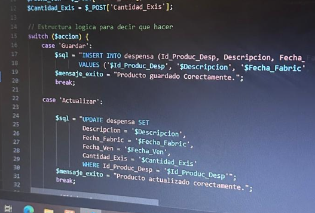
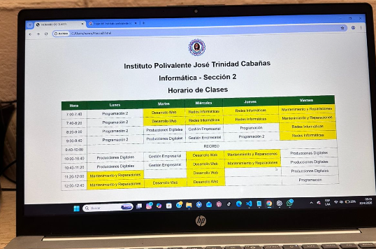
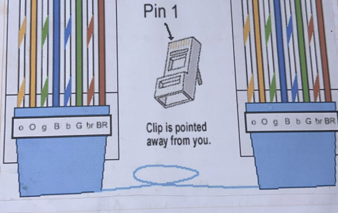
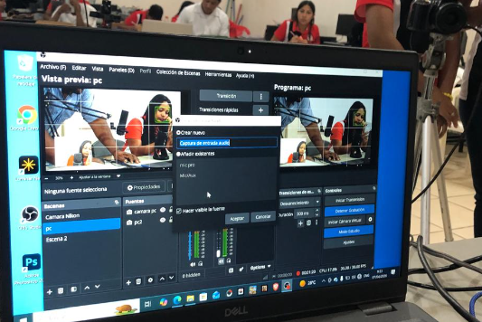
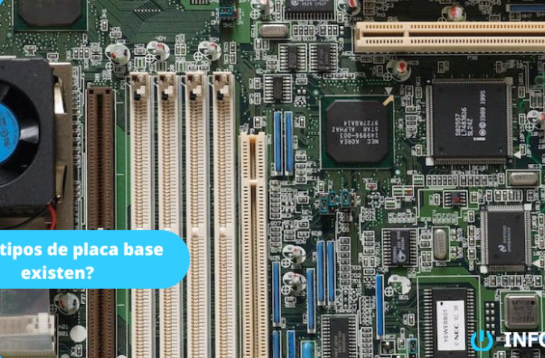

El Bachillerato Técnico Profesional en Informática es una carrera diseñada estratégicamente para responder a las demandas del ecosistema digital global. En la actualidad, la tecnología es la columna vertebral de cualquier industria, convirtiendo a los profesionales de los sistemas en piezas indispensables para la innovación y la automatización.
A lo largo de su formación, el estudiante adquiere competencias críticas en arquitectura de hardware, diagramación lógica, desarrollo de software web y de escritorio, administración de redes corporativas y la creación de contenidos multimedia competitivos. Además de la preparación técnica, se fomenta activamente el emprendimiento mediante herramientas de gestión corporativa, capacitando a los jóvenes para estructurar sus propias agencias de servicios tecnológicos.
Oportunidades Futuras: Al egresar, el estudiante cuenta con el perfil idóneo para incorporarse de inmediato al mercado laboral como desarrollador junior, soporte técnico especializado o administrador de infraestructura de red. Asimismo, posee las bases analíticas fundamentales para continuar con éxito carreras universitarias de alto perfil como Ingeniería en Sistemas, Licenciatura en Informática Administrativa, Telecomunicaciones o Ciberseguridad.

Esta asignatura sumerge al estudiante en el diseño lógico avanzado y el desarrollo de aplicaciones robustas. Se profundiza en lenguajes de programación modernos, enseñando metodologías para crear algoritmos estructurados y limpios que solucionen problemas reales de procesamiento de datos.
Competencias y Aplicación Laboral: Capacidad para codificar, depurar y optimizar sistemas informáticos. Prepara al estudiante para ejercer tareas de desarrollo de software embebido y creación de herramientas automatizadas empresariales.

Centrada en los estándares del ecosistema de Internet. Los alumnos aprenden el manejo y estructuración de tecnologías web, diseño de interfaces de usuario interactivas (UI), usabilidad (UX) y la correcta integración de lenguajes para la web moderna.
Competencias y Aplicación Laboral: Diseño e implementación de portales web corporativos y plataformas web auto-gestionables. Abre las puertas al mercado del trabajo remoto (freelance) y agencias de marketing digital.

Estudio detallado de la infraestructura de comunicación de datos. Abarca desde las tipologías y el ponchado de cables físicos, hasta la configuración lógica de routers, switches, subredes e implementación segura de arquitecturas cliente-servidor.
Competencias y Aplicación Laboral: Diagnóstico y optimización de flujos de datos en organizaciones. Los egresados pueden operar eficientemente como administradores de redes locales y técnicos de soporte en conectividad.

Una ventana hacia la creatividad técnica. En este módulo se instruye sobre la edición audiovisual, modelado básico, diseño de piezas gráficas y optimización de contenido multimedia interactivo bajo estándares de calidad comercial.
Competencias y Aplicación Laboral: Dominio de software de edición y conceptualización audiovisual. Esencial para trabajar en departamentos de comunicación institucional, creación de contenidos y edición multimedia.

Aborda el componente físico (Hardware). Los estudiantes realizan ensamblajes completos de ordenadores, diagnostican fallos mecánicos y lógicos, ejecutan limpiezas preventivas e instalan y configuran sistemas operativos desde cero.
Competencias y Aplicación Laboral: Soporte de hardware de precisión. Permite trabajar de manera independiente en talleres de reparación tecnológica o liderar mesas de ayuda de TI (Helpdesk).
Une la ingeniería informática con el sector de negocios. Enseña a evaluar costos de desarrollo de software, planificar proyectos mediante metodologías ágiles, redactar contratos tecnológicos y comprender la legislación vigente de propiedad intelectual.
Competencias y Aplicación Laboral: Liderazgo técnico y estructuración de proyectos de software. Clave para el rol de Gestor de Proyectos de TI o para fundar microempresas de base tecnológica (Startups).
Especialista técnico enfocado en la arquitectura física, el despliegue de redes de comunicación eficientes y el desarrollo de plataformas interactivas para la web moderna.
Clases que imparte:
Profesional dedicada a potenciar la lógica algorítmica y el desarrollo de software structured, coordinando habilidades de soporte físico en sistemas de computación.
Clases que imparte:
Orientado al diseño multimedia creativo, la producción audiovisual avanzada y la resolución de problemas técnicos lógicos e integrales de hardware.
Clases que imparte:
Encargada de dotar a los estudiantes de herramientas de administración corporativa, metodologías ágiles y gestión de proyectos tecnológicos aplicados al mercado actual.
Clases que imparte: